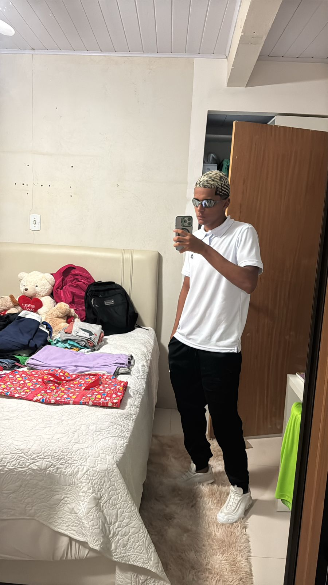

Sobre Mim
Sou Gustavo, 19 anos, e atualmente moro em Vila Velha. Estou cursando Sistemas de Informação na UVV, onde busco ampliar meus conhecimentos na área de tecnologia.
Habilidades Pessoais
Tomada de decisões e Pensamento crítico
Hobbies
Sou atleta de surf de peito há 2 anos e tenho orgulho de ser competidor brasileiro. Atualmente, estou representando o Espírito Santo nas etapas do Campeonato Brasileiro 2024/2025, buscando uma vaga no mundial de bodysurf. A adrenalina das competições e a conexão com o mar são o que mais amo nessa modalidade. Cada onda é uma nova oportunidade de superar limites e aprimorar minhas habilidades, e estou sempre em busca de novos desafios nas praias do Brasil!
Vida Acadêmica
Sistemas da Informação 1° Período